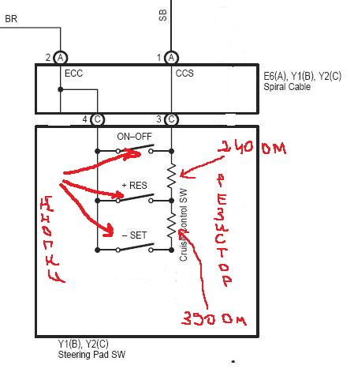
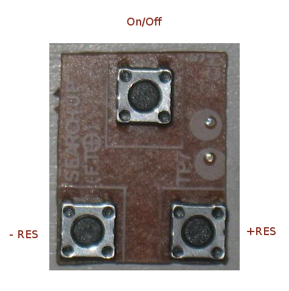
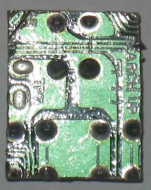
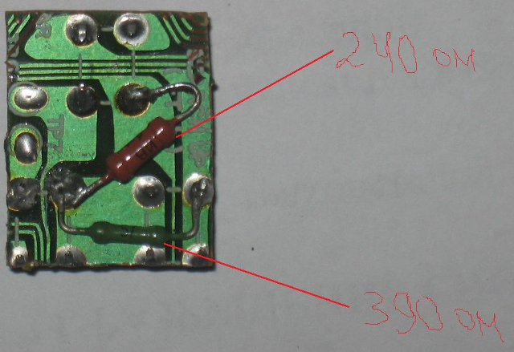
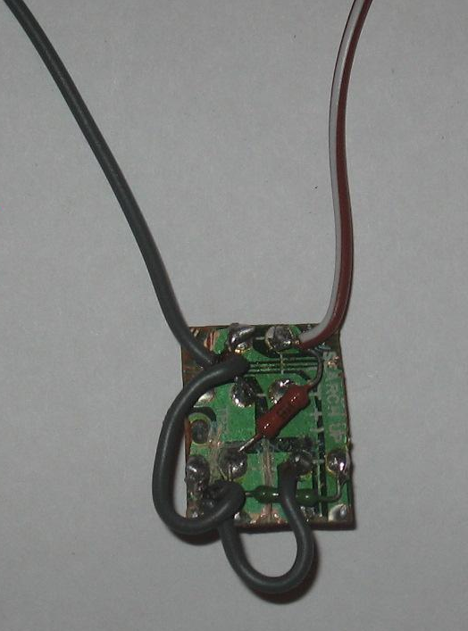
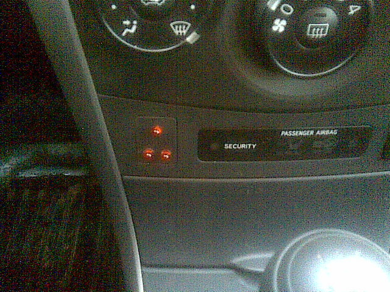
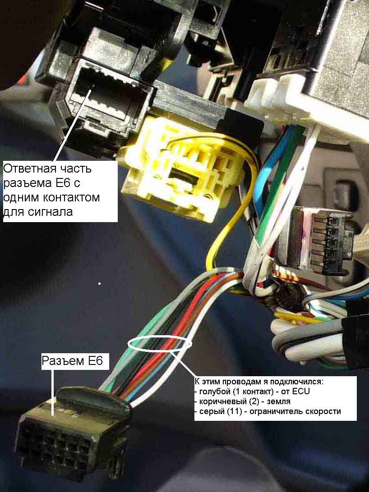
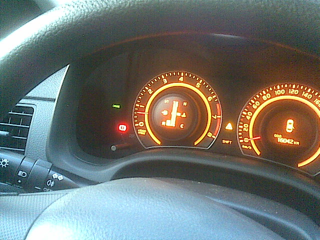

Уважаемые Королловоды, выкладываю фотоотчет по установке круиз-контроля (бюджетный вариант), в Corolla 2007 с двигателем 1,6 и МКПП.
Огромное спасибо участникам ветки "Установка круиз-контроля в Короллу", за неоценимую информацию предоставленную ими.
Необходимы следующие материалы: Резисторы – 3 или 2 шт. (в зависимости какой вариант делать) если вариант с тремя кнопками та берем резисторы на 240 и 390 Ом, если 4 кнопки тогда в добавок к ним еще один резистор на 910 Ом кнопки (без фиксации) опять же 4 или 3 шт., паяльник и тестер. Определяемся с местом установки кнопок и их количеством. Я решил сделать вариант с 3 кнопками и поставить их в заглушку на центральной консоли.В магазине радиодетали приобрел 2 резистора + 3 кнопки от старого видеомагнитофона на плате.
Припаиваем резисторы к кнопкам по следующей схеме.

Должно получиться примерно вот так.



Припаиваем провода.

Проверяем сопротивление тестером. При нажатии на кнопку Res(+) оно должно быть в диапазоне от 235-245 Ом.
При нажатии кнопки Set(-) 617-643 Ом.
При нейтральном положении (просто подцепляем тестер к проводам) 10 кОм или более.
Сверлим в заглушки дырки под светодиоды (кому что нравится), и собираем кнопку.
Долго думал как закрепить эту конструкцию в заглушке, на когда пришел в машину оказалось все очень просто. Если собираем на плате(как у меня) плату необходимо вырезать точно по внутреннему диаметру заглушки. Затем вставить ее в заглушку и все это дело совместно поставить на место. Все встает как надо и ни куда не проваливается.

Подцепляем провода от кнопки к разъему

И радуемся работе круиз-контроля.

Вопрос:
- как я понял это можно сделать на комплектации TERRA без замены спирального провода?
Ответ:
Да вы все правильно поняли. Все функции круиз-контроля (по отключению) работают так-же как и на заводском.
Ещё появились вопрос:
- как подключались к разъему?
- разъем Е6 это который входит в Спиральный кабель? если да то, что нужно разбирать?“
Ответ:
К разъему непосредственно не подключался (побоялся испортить), сделал врезку в сам провод.